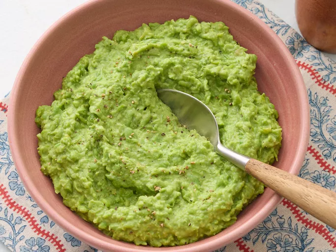

Mushy peas
Home

Description
Mushy peas are a simple and tasty side dish great with any fried fish, especially cod.
They add vibrant color and creamy goodness to the plate.
Ingredients
- 1 (10 ounce) package frozen green peas
- 1/4 cup heavy cream
- 1 tablespoon butter
- 1/2 teaspoon salt
- 1/2 teaspoon freshly ground black pepper
Steps
- Gather all ingredients
-
Bring a shallow pot of lightly salted water to a boil over medium-high heat.
Add frozen peas, and cook for 3 minutes, or until tender.
-
Drain peas and transfer to a blender or large food processor. Add cream, butter,
salt, and pepper; process until blended, but still thick with small pieces of peas.
- Adjust seasonings to taste, and serve immediately.